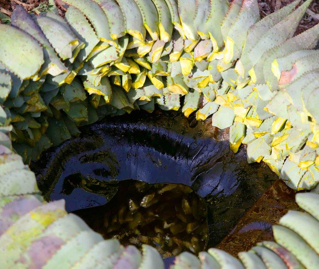

WHY ALOE FEROX?

Aloe Unique brings you a range of skin care treatments containing the powerful active ingredients of the Aloe Ferox plant. Containing almost twice as many amino acids as Aloe Vera, Aloe Ferox is ideal for skin care as it has been scientifically proven to penetrate the skin to the deepest layer. The Aloe Ferox plant is rich in amino acids, the powerful agent Aloin, as well as polysaccharides and other plant metabolites so it contributes to a soft and smooth skin that is hydrated, nourished and rejuvenated.
Get to know the better Aloe.
Your skin will thank you.
Your skin will thank you.
ALOE FOREX
Almost twice as many amino acids than Aloe Vera
Indigenous to South Africa
Grows wild – no pesticides or chemicals
20 x more bitter sap containing Aloin which has healing properties, is an anti-oxidant and viral stimulant
ALOE VERA
Far fewer amino acids than Aloe Ferox
Not indigenous to Southern Africa
Heavily cultivated worldwide
Contains very little bitter sap
Why is Aloe Unique best suited for your skin?
- Increases skin elasticity and decreased appearance of lines and wrinkles
- Improves hydration levels of the skin
- Decreases skin sensitivity, soothes irritations and a reduces inflammation
- Refines skin texture
- Alleviates excessive dryness and oiliness
Active Ingredients
Cape Aloe Ferox Gel
- -Active in cellular oxidation
- -Increases tyrosine (amino acid) activity
- -Softens and soothes skin
- -Used for treating skin lesions and conditions the skin
Vitamin C or Ascorbic acid (Water Soluble)
- -Active in cellular oxidation
- -Increases tyrosine (amino acid) activity
- -Softens and soothes skin
- -Used for treating skin lesions and conditions the skin
Vitamin B5 or Pantothenic acid
- -Active in cellular oxidation
- -Increases tyrosine (amino acid) activity
- -Softens and soothes skin
- -Used for treating skin lesions and conditions the skin
Vitamin A palmitate
- -Active in cellular oxidation
- -Increases tyrosine (amino acid) activity
- -Softens and soothes skin
- -Used for treating skin lesions and conditions the skin
Vitamin E or Tocopherol (Oil Soluble)
- -Active in cellular oxidation
- -Increases tyrosine (amino acid) activity
- -Softens and soothes skin
- -Used for treating skin lesions and conditions the skin
Vitamin B6 or Pyrodoxine (Oil soluble)
- -Active in cellular oxidation
- -Increases tyrosine (amino acid) activity
- -Softens and soothes skin
- -Used for treating skin lesions and conditions the skin
Vitamin B2 or Riboflavin
- -Active in cellular oxidation
- -Increases tyrosine (amino acid) activity
- -Softens and soothes skin
- -Used for treating skin lesions and conditions the skin
Free range Farming

Aloe Ferox grows wild and is harvested using ancient methods. This provides sustainable jobs for members of the local community.

he aloe leaves are placed in
stacks in a circle around a hollow
in the ground. The juice from the
leaves drips down and is
collected in the hollow.
After the juice has been collected,
boiled and cooled down it is
crystallized. It then gets crushed to produce bitter crystals.